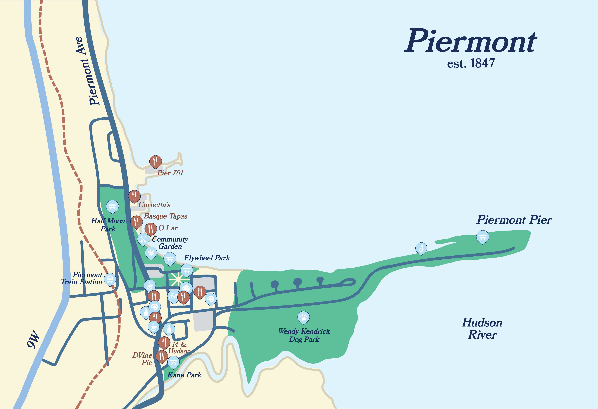
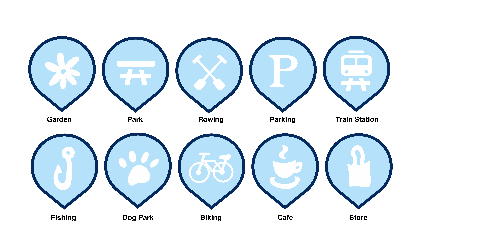
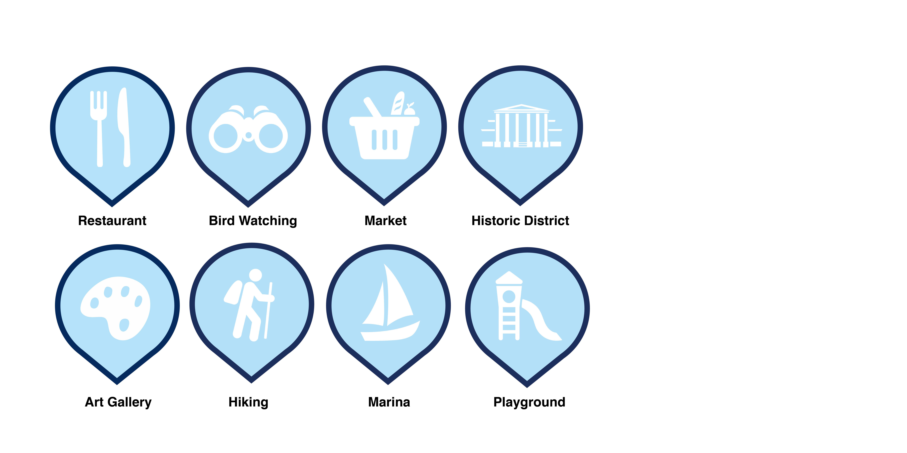
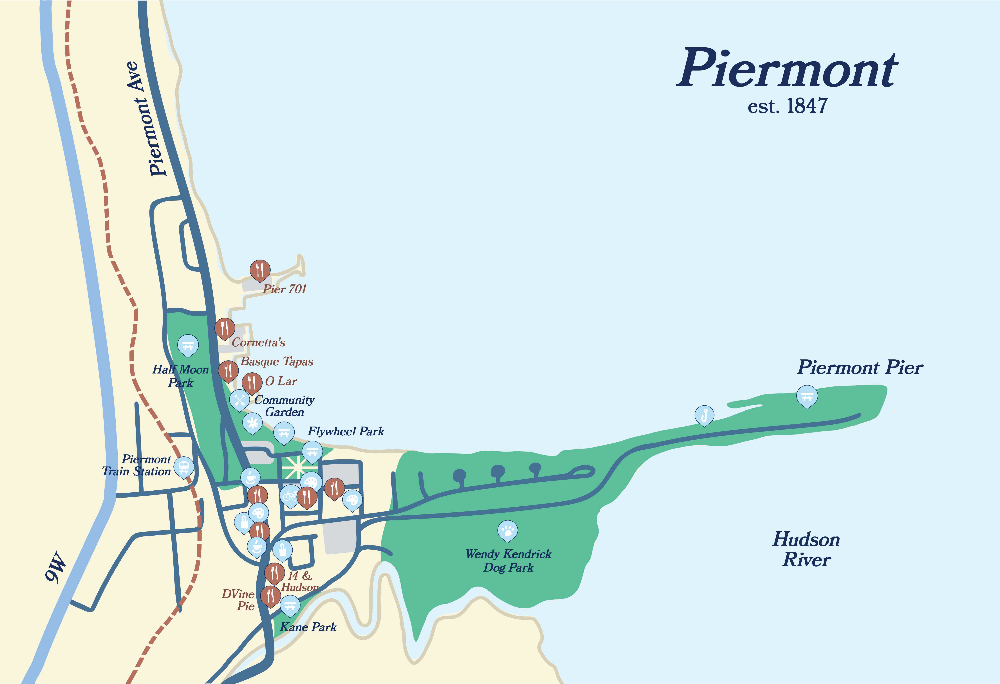
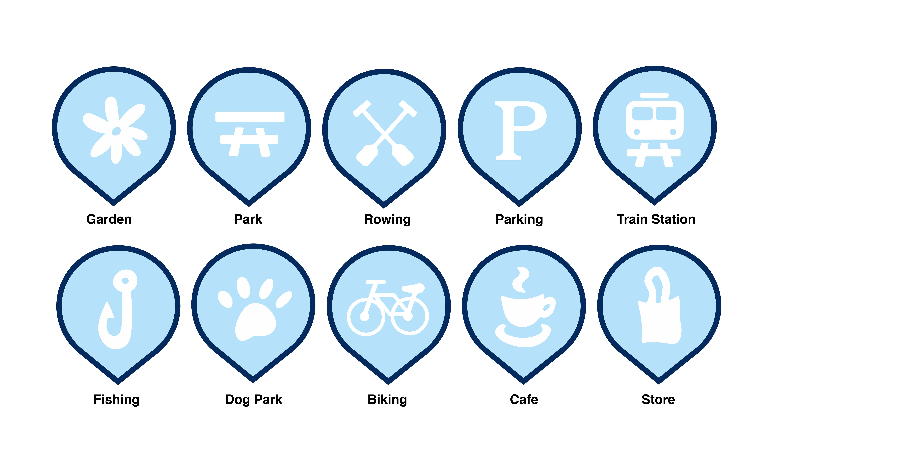
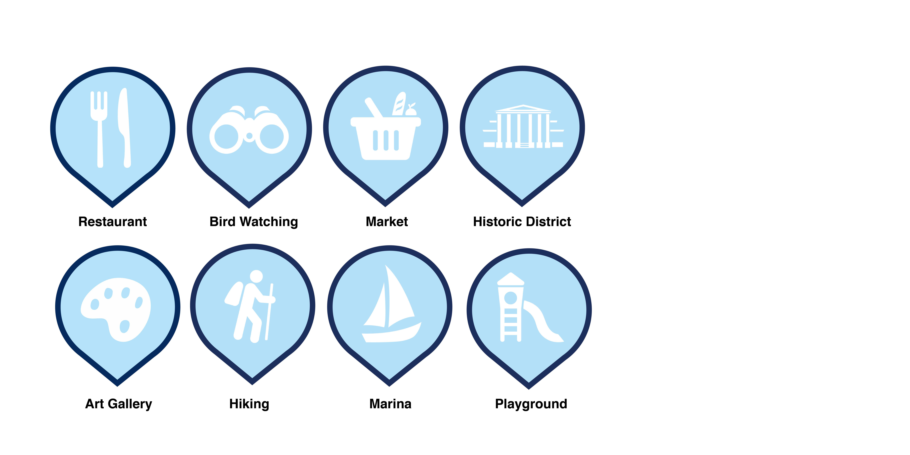
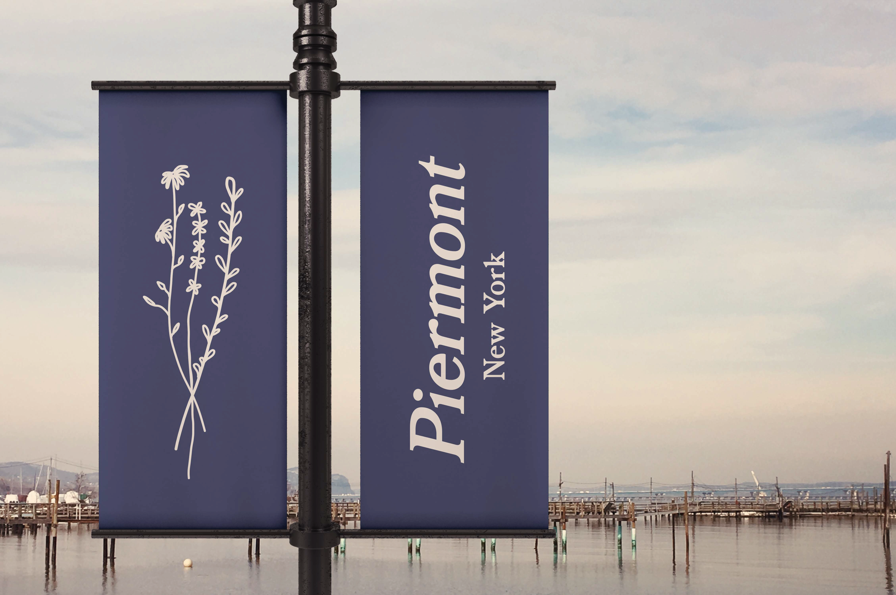
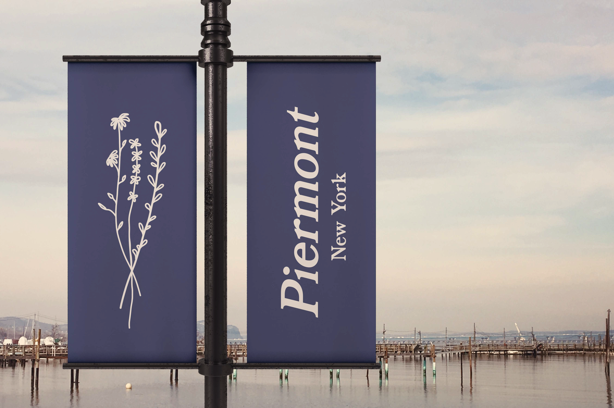

Piermont, NY Wayfinding
 





 



Piermont, New York Wayfinding: map, icons, signage
This project focuses on building a successful wayfinding design for Piermont, New York, a small town only fifteen minutes away from where I live. I visit the town often, as it has beautiful scenery and a bunch of recreational activities, along with popular dining options. The focal point of Piermont is Piermont Ave, a road that stretches through the whole town parallel to route 9W. Piermont's main attractions include multiple restaurants, cafes, stores, and parks. Piermont actually has a rich history, which I was aware of, but didn't know the exact details. The town was developed when the Erie railroad was constructed- a project that connected NYC to Lake Erie. The railroad is no longer in use, however the train station is now reworked as a museum. Piermont Paper Company then built a complex on the old rail yards. The town definitely has a vintage, old timey feel and this history contributes to that atmosphere. I would personally say that the main attraction of Piermont is its pier, which stretches out a mile long into the Hudson River, where I go often to stroll, and see many people finishing, running, and biking. Piermont is also home to many bikers, so consequently there is a bike shop in addition to thrift shops and multiple art galleries.
To fully encapsulate Piermont's identity before beginning my wayfinding design, I visited Piermont for the day and walked throughout the town. I took pictures of the river, half moon park, the downtown area, and other miscellaneous pictures. I then sketched out icons, logos, and picked my typeface (Bookman) and a general color palette that would be focused on muted blues and beiges. The logo's I sketched included Tallman Mountain and the new bridge. The one I chose was a sketch of a view of Piermont, it's pier, and the bridge. My map features beige land, light blue sea, the old railroad, and green to represent parks and nature areas. My signage includes a general Piermont sign, lamp post signage, signage for Half Moon Park, and directional signage. I mocked up all the signs in images I took of Piermont. The directional sign I would hypothetically place in the downtown area, near all the restaurants.
It is nice to redesign wayfinding for areas/buildings/towns that you are familiar with, as you realize that they might need some updating. I chose Piermont as it has several attractions and I have never really seen a map for the general area, or a signage for the area. I think these additions would be useful (and of course visually appealing) as Piermont is very dense and directional assistance would be beneficial. This wayfinding design is now in process of being used in part for the official town of Piermont.